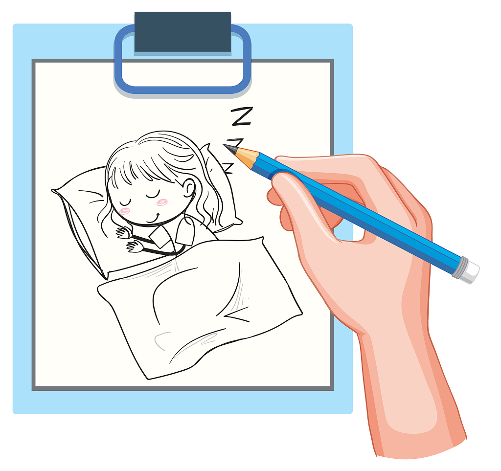

“Khi bạn chấp nhận rằng mình cũng có quyền được yếu đuối,
đó là lúc bạn bắt đầu mở lòng để đón nhận sự vỗ về từ thế gian.”
Đã bao giờ bạn rơi vào trạng thái này chưa: Bạn xem một thước phim tài liệu bình dị, đọc một mẩu chuyện ngắn về hai người hoàn toàn xa lạ trên chuyến xe buýt cuối ngày — một người kín đáo thu chân nhường ghế, một người khẽ gật đầu cảm ơn — thế rồi bất giác, sống mũi bạn cay xè, một giọt nước mắt lặng lẽ trào ra mà chính bạn cũng không hiểu vì sao?
Rõ ràng câu chuyện ấy không có bi kịch, không có sự chia ly đau xé ruột gan. Thế nhưng tại sao tâm trí bạn lại phản ứng mạnh mẽ đến vậy? Câu trả lời không nằm ở tình tiết câu chuyện, mà nằm ở những tầng khao khát đang bị chôn vùi trong tiềm thức của chính bạn.

🔍 Giải mã tâm lý: Chiếc khiên bảo vệ của người luôn phải làm điểm tựa
Nếu bạn dễ xúc động trước sự tử tế giữa những người xa lạ, rất có thể trong đời sống thực tại, bạn là một "người gánh vác thầm lặng". Bạn thường là trụ cột cảm xúc của gia đình, người đồng nghiệp đáng tin cậy luôn hoàn thành mọi việc, hoặc người bạn luôn lắng nghe tâm sự của người khác mà hiếm khi kêu ca nửa lời.
Để làm được điều đó ngày này qua ngày khác, bạn đã vô thức dựng lên một chiếc khiên bảo vệ dày cộm. Bạn tự thôi miên bản thân: "Mình ổn, mình chịu được, mình không được phép gục ngã". Bạn quen với việc trao đi sự quan tâm, nhưng lại lúng túng và e dè khi có ai đó hỏi han: "Hôm nay bạn có mệt lắm không?". Bạn sợ làm phiền người khác, sợ mang nợ ân tình, nên luôn từ chối sự giúp đỡ của người quen.
Nhưng mẩu chuyện về những người xa lạ trên chuyến xe đêm lại là một cú chạm bất ngờ. Bởi vì ở đó, sự tử tế không đi kèm bất kỳ một sự ràng buộc hay kỳ vọng nào. Người nhường ghế không đợi bạn phải nói lời cảm ơn hoa mỹ, họ chỉ lặng lẽ nhường lại một khoảng êm ái vì thấy bạn đang oằn mình vì mệt mỏi. Chính sự dịu dàng thuần khiết ấy đã xuyên thủng lớp phòng vệ thép của bạn, chạm thẳng vào đứa trẻ cô đơn bên trong.
🌧️ Giọt nước mắt của sự giải tỏa (Catharsis)
Trong tâm lý học, phản ứng nghẹn ngào này được gọi là hiện tượng Catharsis — sự thanh tẩy và giải tỏa cảm xúc dồn nén. Bạn không khóc vì thương cho nhân vật trên chuyến xe, bạn khóc vì tiềm thức của bạn đang khao khát được ai đó đối xử dịu dàng như thế.
Bạn nhận ra rằng sâu thẳm trong lòng, bạn cũng thèm được một lần rũ bỏ vai trò "người lớn mạnh mẽ", được một lần ngồi xuống ghế phụ, nhắm mắt lại và để người khác lái xe đưa mình về nhà. Bạn cũng muốn có ai đó nhìn thấy đôi vai run lên vì mỏi mệt của mình mà không phán xét, không đòi hỏi bạn phải giải thích nguyên do.

🌿 Lời nhắn nhủ từ Tiệm: Bạn được quyền yếu đuối!
Đừng xấu hổ vì một lần sống mũi cay cay hay một giọt nước mắt rơi vô cớ. Đó không phải là yếu mềm, mà là bằng chứng cho thấy trái tim bạn vẫn chưa bị chai sạn sau những bão giông của đời sống.
Hôm nay, hãy cho phép chiếc khiên nặng trĩu ấy được hạ xuống một chút. Nếu có ai đó muốn mang giúp bạn một túi đồ nặng, hãy mỉm cười gật đầu. Nếu có người muốn lắng nghe bạn thở than, đừng vội đổi chủ đề. Học cách đón nhận sự chăm sóc không làm bạn bé nhỏ đi, mà đó là cách bạn cho phép lòng tốt của thế gian được lưu chuyển và sưởi ấm ngay chính tâm hồn mình.